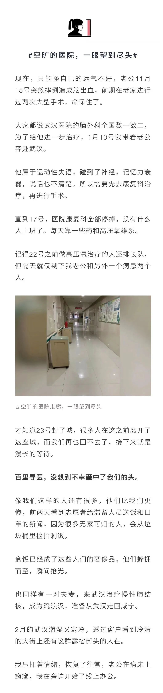
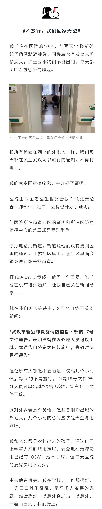

刑满释放的黄女士，到底是怎样离汉进京的？五大疑问待解！
原文链接 备份链接 黄女士及其家人是如何“顺利完成进京全流程”的？当前是否存在更多的“黄女士”？这些令人疑惑的问题，有待一天之内即迅速成立的三个调查组，还公众合理合法的结论。 文 | 王仲昀 Anne 2月26日，北京发布的一例由武汉返京 …
大家好，我是田静。
疫情严控之下，昨天又被一则新闻震惊到：北京东城确诊一女子，刚从武汉来的北京！
武汉封城那么严格，正常人滞留武汉都无法出来，有的只能捡垃圾吃，她一名正在发烧的患者，是如何突破城防的呢？
再看后面媒体挖出的新闻，更让人惊掉下巴：“此人属于武汉当地监狱刑满释放人员，在武汉当地已经确诊。刑满释放后，由北京家属自行开车去武汉接回，现本人及其3名家属均被隔离。”
家属也出来接受采访，他们也是被武汉监狱骗的，根本没告诉他们被确诊，如果知道实情肯定不能这样去接回来了。
具体怎么出城的，却没有说，只说一切都说正常手续。
这个消息也让滞留在武汉医院一个多月的刘艳气愤不已。武汉政府可以放走监狱里的确诊病人，为什么不能释放他们？
刘艳身边可都是非肺炎重症病患，离开武汉是为了活命。
正如昨日方方日记所说，“不惜一切代价，本身就是不科学的！”
因为武汉医疗资源全部倾斜到新冠肺炎，很多被困在武汉的非肺炎患者无基本医疗保障，要么医院不接收，要么住进去的也无法进行正常治疗。
每个人都有平等活下去的权利，刘艳重病的老公已经错过最佳治疗期，状况越来越差，她只想尽快能带老公离开武汉，去照顾独自在家的13岁女儿。
在丈夫睡着时，刘艳放下手机中正在批改的作业，给我们讲述了这段时间在武汉医院中的煎熬经历。





口述：刘艳
编辑：姬老爷
协理：三三 霹雳羊
本文图片由受访者提供
为中国女性安全 提供专业解决方案
**▬ ▬ ▬ ▬ ▬ ▬ ● ▬ ▬ ▬ ▬ ▬ ▬
**
女 孩 别 怕
未经授权 禁止转载
欢迎分享到朋友圈
原文链接 备份链接 黄女士及其家人是如何“顺利完成进京全流程”的？当前是否存在更多的“黄女士”？这些令人疑惑的问题，有待一天之内即迅速成立的三个调查组，还公众合理合法的结论。 文 | 王仲昀 Anne 2月26日，北京发布的一例由武汉返京 …
原文链接 备份链接 【财新网】（记者 苑苏文 覃建行 王梦遥）疫情严控之下，2月22日凌晨2时，自武汉女子监狱刑满释放的黄女士进入北京，之后被确诊为新冠肺炎病例。公众普遍质疑，其是如何离开武汉，又是怎样达到北京的？ 财新记者获悉，黄女士刑 …
原文链接 备份链接 2月26日，北京发布一例新冠肺炎确诊病例信息引发舆论关注。北京市东城区崇外街道新怡家园社区居委会通过微信公众号发布确诊病例提示，称H女士2月22日从武汉来京，当日被隔离检查，3名亲属已进行集中隔离医学观察，并由区疾控中 …
原文链接 备份链接 截至2月20日24时，全国有湖北、浙江、山东五所监狱发生了新冠肺炎感染疫情，这些均为输入性病例，确诊的505人中暂无死亡 图/Unsplash 文 |《财经》记者 王丽娜 俞琴 辛颖 黄姝静 编辑 | 鲁伟 截至2 …
原文链接 备份链接 岛语 非常时期，武汉成了全国人民挂念、祈福的城市。封城后，武汉人民的真实生活是什么样？ 武汉在发生哪些变化？ 正和岛自1月26日起特别推出“叶青专栏”。叶青是一位定居武汉40年的市民，也是一名学者和官员。在过往多期的专 …